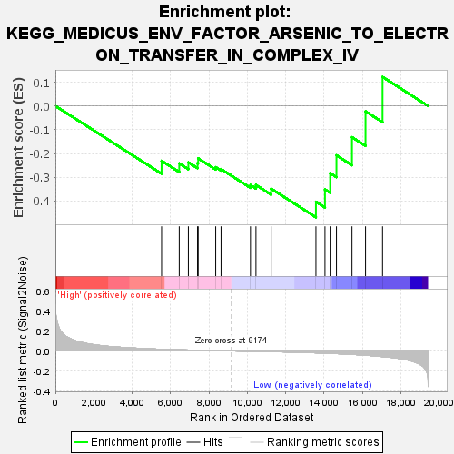
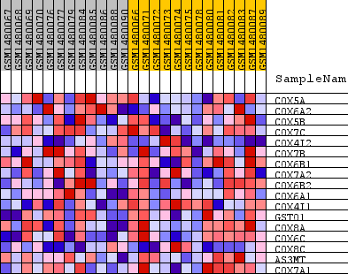
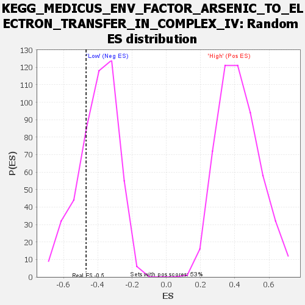

| Dataset | WG6v3.MRPL3.cls#High_versus_Low.MRPL3.cls#High_versus_Low_repos |
| Phenotype | MRPL3.cls#High_versus_Low_repos |
| Upregulated in class | Low |
| GeneSet | KEGG_MEDICUS_ENV_FACTOR_ARSENIC_TO_ELECTRON_TRANSFER_IN_COMPLEX_IV |
| Enrichment Score (ES) | -0.46859252 |
| Normalized Enrichment Score (NES) | -1.1640943 |
| Nominal p-value | 0.2769556 |
| FDR q-value | 1.0 |
| FWER p-Value | 1.0 |

| SYMBOL | TITLE | RANK IN GENE LIST | RANK METRIC SCORE | RUNNING ES | CORE ENRICHMENT | |
|---|---|---|---|---|---|---|
| 1 | COX5A | COX5A | 5534 | 0.016 | -0.2309 | No |
| 2 | COX6A2 | COX6A2 | 6453 | 0.011 | -0.2418 | No |
| 3 | COX5B | COX5B | 6929 | 0.009 | -0.2374 | No |
| 4 | COX7C | COX7C | 7407 | 0.006 | -0.2403 | No |
| 5 | COX4I2 | COX4I2 | 7440 | 0.006 | -0.2207 | No |
| 6 | COX7B | COX7B | 8354 | 0.003 | -0.2577 | No |
| 7 | COX6B1 | COX6B1 | 8632 | 0.002 | -0.2657 | No |
| 8 | COX7A2 | COX7A2 | 10165 | -0.003 | -0.3331 | No |
| 9 | COX6B2 | COX6B2 | 10451 | -0.004 | -0.3326 | No |
| 10 | COX6A1 | COX6A1 | 11244 | -0.007 | -0.3484 | No |
| 11 | COX4I1 | COX4I1 | 13577 | -0.019 | -0.4034 | Yes |
| 12 | GSTO1 | GSTO1 | 14048 | -0.022 | -0.3516 | Yes |
| 13 | COX8A | COX8A | 14318 | -0.024 | -0.2827 | Yes |
| 14 | COX6C | COX6C | 14647 | -0.027 | -0.2078 | Yes |
| 15 | COX8C | COX8C | 15456 | -0.035 | -0.1315 | Yes |
| 16 | AS3MT | AS3MT | 16162 | -0.043 | -0.0227 | Yes |
| 17 | COX7A1 | COX7A1 | 17048 | -0.056 | 0.1223 | Yes |

